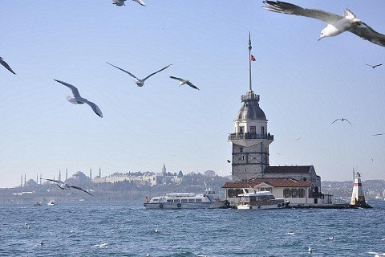

Стамбул – крупнейший город Турции, величественно раскинувшийся на берегах пролива Босфор. Этот мегаполис – единственный в стране, да и во всем мире, расположенный одновременно в Европе и Азии. Именно через Стамбул с населением в 14 657 434 человека проходит географическая граница между двумя континентами, и именно здесь встречаются воды двух морей, Черного и Мраморного. Европейскую часть города, со множеством торговых и офисных центров, и азиатские кварталы, где превалируют спальные районы, соединяет несколько мостов, движение по которым никогда не прекращается.
Ссылка на картинку